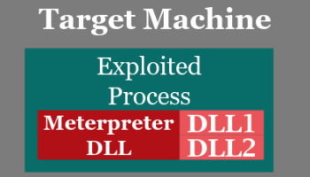

Meterpreter
Meterpreter(that stand for
Metasploit Int
erpreter) is a powerful shell that allow us to run Linux commands even if we are on a Windows machine, it simply interprets and converse the commands to run under a Windows environment
It can run on vulnerable applications and services like: Android, BSD, Java, Linux, PHP, Python, Windows
With this shell on the remote machine(because we have exploited it) we can gather information, transfer files between the attacker and victim machines, install backdoors..
• Meterpreter does NOT create a separate running process like most other Metasploit payloads and other exploitation tools BUT offers to the attacker a self-contained command shell environment that runs from within the memory space of an exploited process.
•
Meterpreter is just a DLL loaded into one of the processes on the target machine and can be extended with additional DLLs sent after the initial one.
• Because Meterpreter is entirely memory resident, it disappears at the reboot of the machine
 List of all meterpreter commands
or
Category of Commands:
•
Core Commands → allow us to interact with the current session
•
Stdapi: File System Commands → allow us to browse and navigate the target machine
•
Stdapi: Networking Commands → allow us to get informations about the network configuration of the remote machine
•
Stdapi: System Commands → we can get more informations about the exploited machine
command information
List of all meterpreter payload:
to set the payload see the chapter of metasploit
HERE